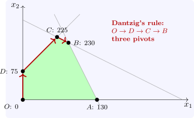

3.2 The tableau
By hand, the computation is organised in a tableau: the rows of \([B^{-1}A \mid B^{-1}b]\), one per basic variable, and an objective row holding the reduced costs and the current value. A pivot on row \(\ell \) and column \(j\) divides row \(\ell \) by the pivot element and subtracts multiples of it from the other rows, including the objective row, so that column \(j\) becomes a unit vector. For a maximisation written with slack variables, the objective row starts as \(-c\), and the tableau is optimal when the objective row has no negative entries.
Example 3.2.1. For Example 2.3.1, add slacks \(s_1, s_2, s_3\). The initial tableau, with basis \(\{s_1, s_2, s_3\}\) at the origin, and the final one are
| basic | \(x_1\) | \(x_2\) | \(s_1\) | \(s_2\) | \(s_3\) | rhs |
| \(s_1\) | \(2\) | \(1\) | \(1\) | \(0\) | \(0\) | \(26\) |
| \(s_2\) | \(2\) | \(4\) | \(0\) | \(1\) | \(0\) | \(56\) |
| \(s_3\) | \(-1\) | \(1\) | \(0\) | \(0\) | \(1\) | \(5\) |
| \(Z\) | \(-10\) | \(-15\) | \(0\) | \(0\) | \(0\) | \(0\) |
| basic | \(x_1\) | \(x_2\) | \(s_1\) | \(s_2\) | \(s_3\) | rhs |
| \(s_3\) | \(0\) | \(0\) | \(1\) | \(-\frac 12\) | \(1\) | \(3\) |
| \(x_1\) | \(1\) | \(0\) | \(\frac 23\) | \(-\frac 16\) | \(0\) | \(8\) |
| \(x_2\) | \(0\) | \(1\) | \(-\frac 13\) | \(\frac 13\) | \(0\) | \(10\) |
| \(Z\) | \(0\) | \(0\) | \(\frac 53\) | \(\frac {10}3\) | \(0\) | \(230\) |
With Dantzig’s rule (enter the most negative entry of the objective row), \(x_2\) enters first; the ratios are \(26\), \(14\) and \(5\), so \(s_3\) leaves and the method moves to \(D(0, 5)\). Then \(x_1\) enters and \(s_1\) leaves, at \(C(6, 11)\), and finally \(s_3\) re-enters and \(s_2\) leaves, at \(B(8, 10)\) (Figure 3, Software 3.6.1). In the final tableau the objective row is non-negative, so \(B\) is optimal. Its entries \(\frac 53\) and \(\frac {10}3\) under \(s_1\) and \(s_2\) are the amounts by which \(Z\) would rise per extra unit of the first and second resource: the shadow prices, which the section on duality interprets.

Questions on this section
Stuck on something here? Ask below and it stays attached to this topic.